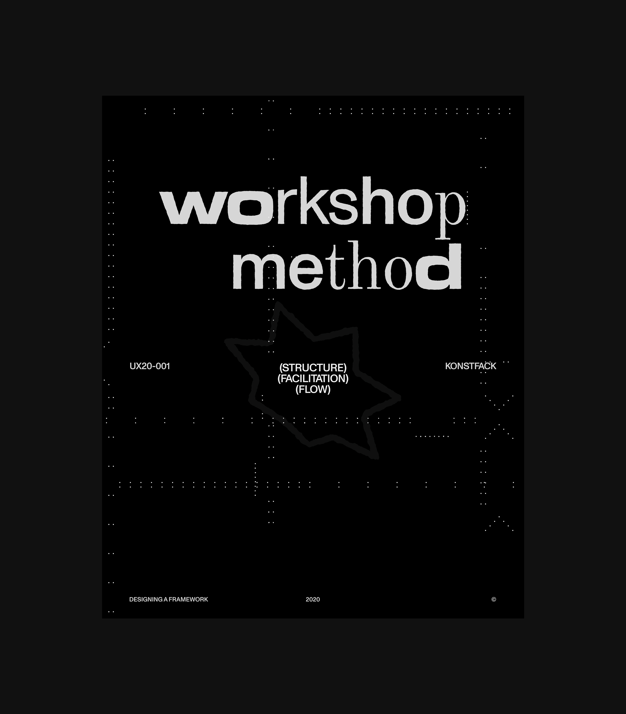
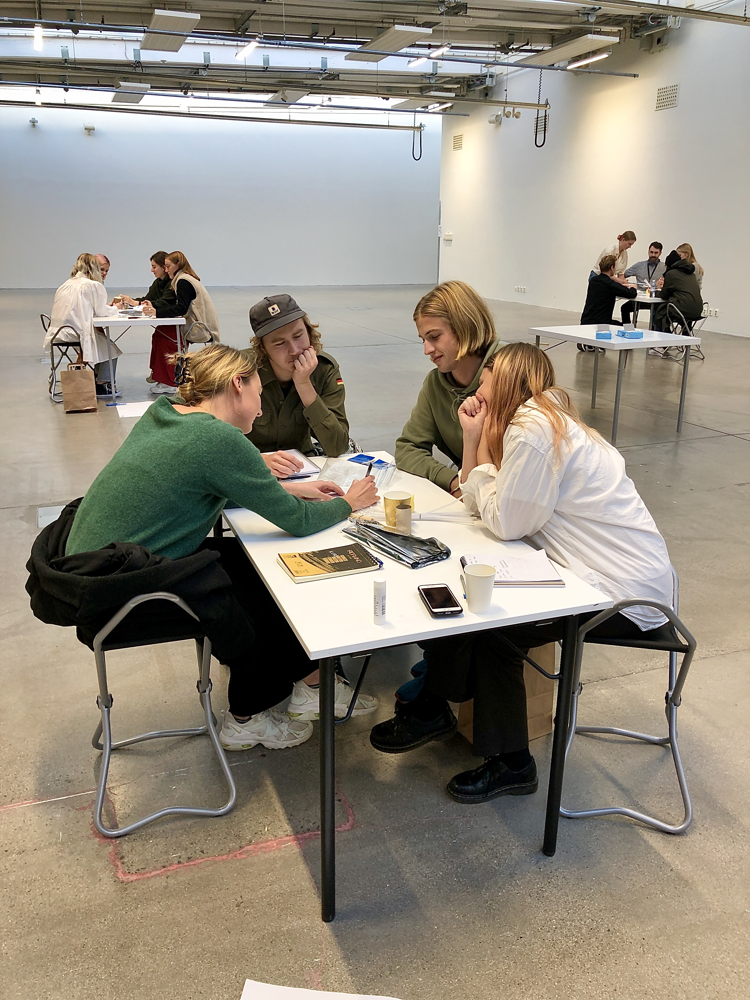
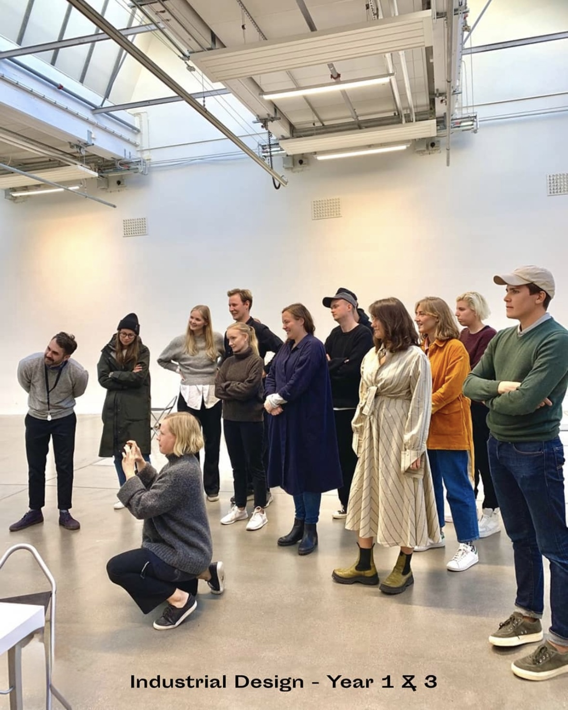

In autumn 2020, my colleague and I from Decent People were invited to Konstfack Industrial Design program to lead a series of lectures and workshops exploring design methods, collaboration and communication.
This time, the brief was more specific: to teach students how to design workshops themselves. Rather than explaining workshop facilitation through theory, we designed the session so that the workshop itself became the teaching material.

The challenge
How do you teach workshop design without turning it into a lecture? A workshop is more than a collection of exercises. The sequence, timing and level of structure all influence what happens in the room.
We wanted students to understand these decisions without giving them a rigid formula to follow. The challenge was to find a balance: enough structure to make the mechanics understandable, but enough flexibility for students to develop their own approach.

approach
Instead of presenting a finished framework and explaining how it worked, we built the teaching experience around the framework itself.
Students experienced the session from the inside while we simultaneously made the decisions behind it visible: why one exercise came before another, why an activity had a particular duration, and how individual exercises contributed to the overall structure.
The workshop became both the activity and the example.

Workshop framework
The session had three layers:
01 — EXPERIENCE
Students took part in a hands-on workshop as participants.
02 — DECONSTRUCTION
We made the decisions behind the session visible: why one exercise came before another, why an activity had a particular duration, and how individual exercises contributed to the overall structure.
03 — REFLECTION
Students were given space to consider the choices they had experienced and how they could apply or adapt them in their own facilitation.
Rather than teaching fixed instructions, the framework focused on the building blocks behind the experience: objectives, exercises, timing, transitions and the role of the facilitator.

Structure vs. spontaneity
One of the central design decisions was deciding how much to fix and how much to leave open. A highly structured workshop can make a method easy to reproduce, but risks turning facilitation into a script. Too little structure, on the other hand, can leave participants without a clear direction.
We therefore treated the framework as a structure to work from rather than a script to follow. The intention was to give students something concrete enough to understand and reuse, while leaving room for their own judgement.

Designing for the room
A workshop doesn't unfold exactly as it does on paper. The facilitator has to respond to what is happening in the room: when a discussion needs more time, when an exercise isn't producing what was expected, or when the group is ready to move on.
This made responsiveness an important part of the framework. Rather than positioning the facilitator as someone who controls every step, we treated facilitation as an active process of reading the group and adjusting the experience accordingly.

Outcome
The session gave students a practical way to think about designing their own workshops, while exposing some of the decisions that are normally invisible to participants.
The format also shifted the role of the students. They weren't only learning how to participate in a workshop, but how to look at one as a designed experience — one that can be structured, adapted and made their own.
For us, the workshop became a way of teaching design through experience rather than explanation.